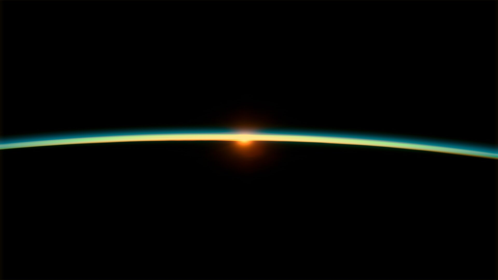
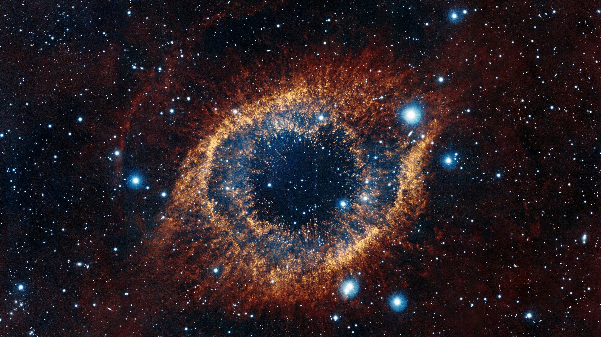

Почему астрономия?
Астрономия — это увлекательнейшая наука и хобби, которое заставляет смотреть вверх и задумываться о масштабах Вселенной. Для меня это способ отвлечься от городской суеты и почувствовать себя частью чего-то огромного. Ночное небо — это огромная книга, которую можно читать бесконечно.
Наблюдать за звездами можно как невооруженным глазом, так и с помощью простого бинокля или телескопа. Главное — найти темное место и немного терпения. Астрономия не требует дорогого оборудования на старте; иногда достаточно просто выйти за город в ясную ночь и посмотреть на Млечный Путь.
Что можно увидеть ночью?
Даже в небольшой любительский телескоп можно разглядеть множество интересных объектов. Это могут быть кратеры на Луне, кольца Сатурна или даже далекие туманности. Но иногда самые яркие впечатления можно получить, просто наблюдая за метеорными потоками.
Если вы только начинаете, начните с Луны. Она всегда доступна и меняет свой вид каждую ночь. Затем можно переключиться на яркие планеты, такие как Венера или Юпитер, которые видны даже в свете городских огней.
События на небе
Специалисты NASA регулярно публикуют рекомендации по наблюдению за ночным небом. В ноябре 2026 года, например, ожидается несколько интересных событий, которые стоит увидеть.
Метеорные потоки
В начале ноября своего пика достигают Южные и Северные Тауриды. Они не очень интенсивны — около пяти метеоров в час, но иногда могут порадовать яркими болидами. А вот Леониды, пик которых приходится на 17-18 ноября, считаются одними из самых быстрых метеоров: их скорость достигает 71 километра в секунду.
Наблюдать за ними лучше всего в предрассветные часы, после захода Луны, вдали от городских огней.
Суперлуние
24 ноября 2026 года ожидается суперлуние. Луна будет находиться ближе к Земле, поэтому будет казаться крупнее и ярче обычного. Это первое из трех суперлуний подряд.

Космические миссии
Наблюдение за звездами — это не только романтика, но и возможность следить за реальными научными открытиями. В 2026 году произошло несколько важных событий в мире космонавтики.
Миссия «Артемида-2»
В апреле 2026 года человечество снова отправило людей к Луне. Миссия NASA «Артемида-2» успешно завершилась возвращением корабля «Орион» на Землю. Астронавты сделали уникальные снимки обратной стороны Луны и затмения Солнца из космоса.
Эта миссия стала важным шагом к возвращению человека на поверхность Луны и подготовке к будущим полетам на Марс.
«Вояджер-1»
В ноябре 2026 года NASA отметило важную веху: зонд «Вояджер-1» стал первым рукотворным объектом, удалившимся от Земли на расстояние одного светового дня. Это значит, что сигнал от него идет до нас 24 часа.
Аппарат был запущен в 1977 году и до сих пор передает данные о границах Солнечной системы, хотя его мощность постепенно снижается. Ученые продолжают следить за этим рекордсменом.
